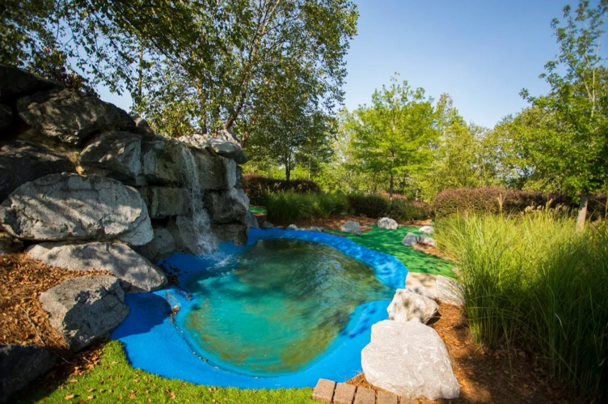
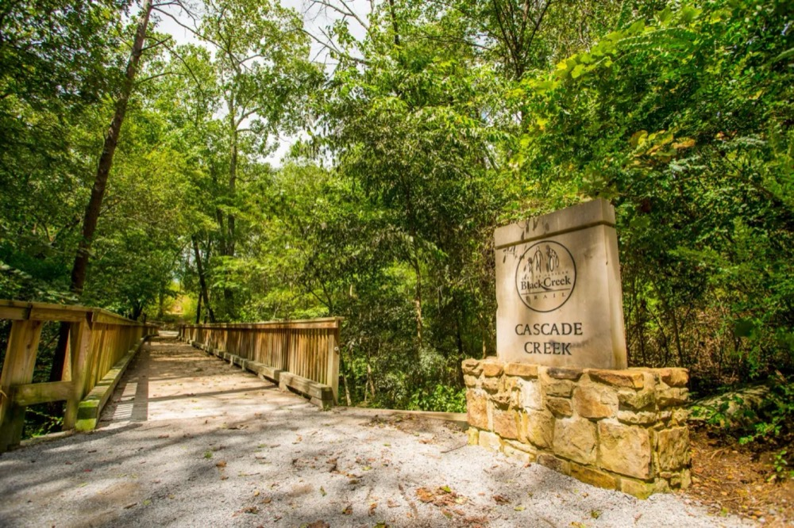
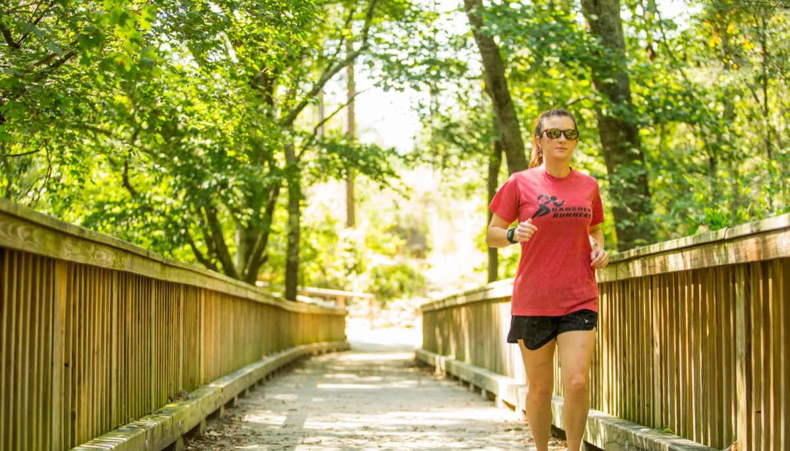
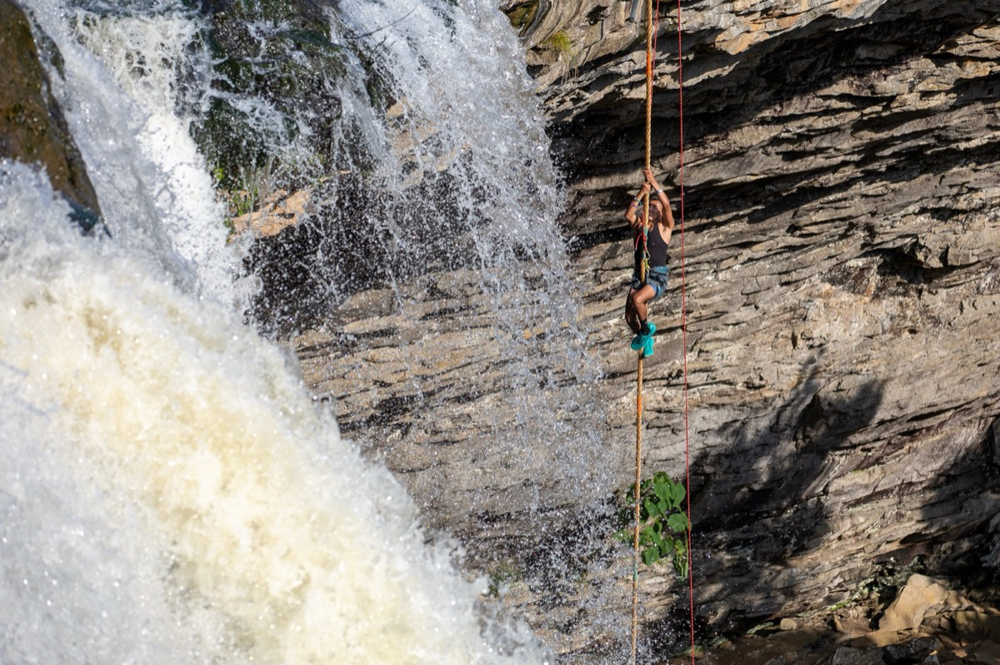
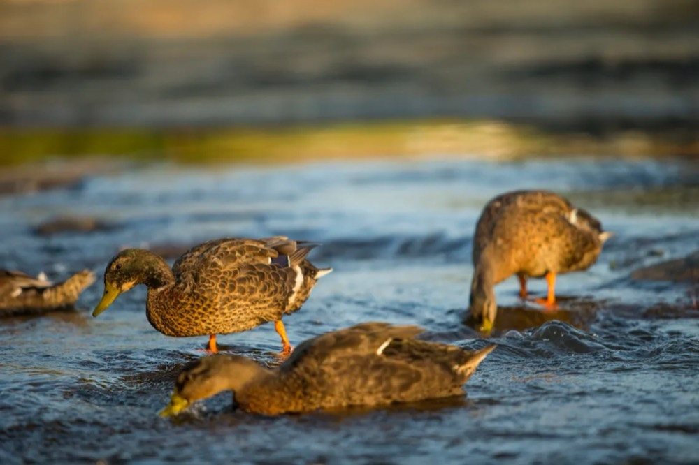

Plan your visit
Everything before you go
Hours, prices, which address to put in your GPS, and answers to the questions the park office gets asked most.
2026 season
Hours
Special events can change the hours. Call (256) 549-4663 if the weather looks iffy.
| Season | Days | Hours | Last ticket |
|---|---|---|---|
| Spring · Feb 16 – May | Every day | 9 AM – 5 PM | 4:30 PM |
| Summer · June – July | Mon – Fri Sat & Sun | 9 AM – 5 PM 9 AM – 7 PM | 4:30 PM 6:30 PM |
| Fall · Aug – late Oct | Every day | 9 AM – 5 PM | 4:30 PM |
| Christmas at the Falls · Nov 13 – Jan 2 | Nightly, except Nov 16–19 & Dec 24–25 | 4 PM – 10 PM | Online only |
| Park office | Mon – Fri | 8 AM – 4 PM | — |
Admission
Tickets & passes
Admission covers the train, Pioneer Village, the animal habitat, the botanical garden and the trail under the falls. 3 and under always free.
Park + mini golf
- Kids, seniors, military $12
- Same-day use
- One round of 18
Season pass
- Kids 4–12, seniors, military $25
- Train included
- Feb 1 – Oct 31
Pass + golf
- Kids, seniors, military $35
- Unlimited mini golf
- Mar 1 – Oct 31

Next door to the park
Mini golf
18 holes past waterfalls, streams and rock, re-carpeted in 2023 and lit for evening play.
| Adults | $8 |
| Kids 4–12 · Seniors 55+ | $6 |
| Groups of 10+ | $5 each |
| Party: 2-hr pavilion + 10 passes | $95 |
Spring weekends 11–7 from Mar 21 · daily 11–7 June 1 – Aug 1 · fall weekends 11–7 through Oct 24. Last tee time one hour before close.
Getting here
Which address do I need?
Black Creek splits the park in two, and each side has its own address. Two miles from downtown Gadsden.

Gorge Trail
From the ticketed side, the easiest way down to and behind the falls. The campground side has a steeper gorge trail for experienced hikers.

Black Creek Trail
A 1.7-mile crushed-stone path from the chapel down the gorge to Black Creek Road, with 15+ miles of single-track off it. Bike helmets required.

Climbing
Managed with the Southeastern Climbers Coalition. No climbing under the falls, and new hardware needs a permit.
Questions
Asked a lot
Still stuck? Call (256) 549-4663 or email noccalulafalls@cityofgadsden.com.

How do you say Noccalula?
"KNOCK-a-LOO-la." Falls is said normally.
Why isn't the waterfall running?
It's fed only by Black Creek, so the flow depends on rain. Winter and spring can bring a flood. Late summer and fall can bring a trickle.
Can I hike under the falls?
Yes. The Gorge Trail on the ticketed side is the easiest way down. The campground-side trail is much steeper.
Are pets allowed?
Yes, on a leash, on both sides of the park. Pets are kept out during a few very crowded events. Service animals are always welcome. Only service animals may ride the train.
Do you rent wheelchairs or strollers?
No, so bring your own. The main park paths are paved, and one of the trains has a car set up for guests with mobility needs.
Does camping include park admission?
No. Campground stays, park admission and mini golf are separate tickets.
Can I fish Black Creek?
Yes, with a city fly-fishing permit, sold online through Gadsden Parks & Recreation.
Where exactly is the waterfall?
Between the two sides of the park, by the big lot near the chapel: 34.0415° N, 86.0211° W.